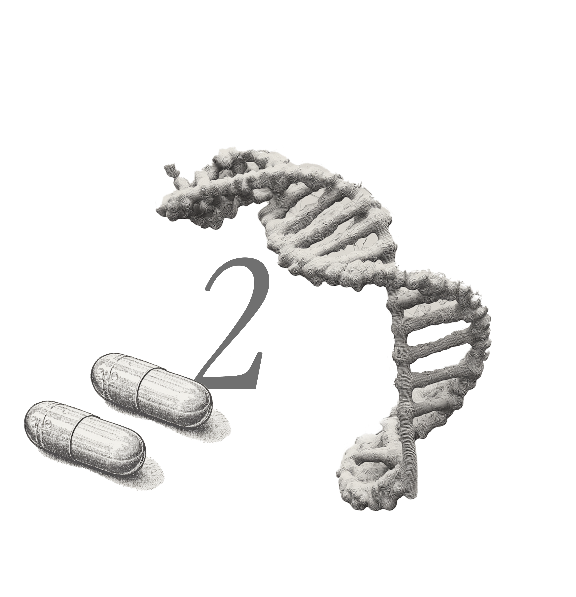
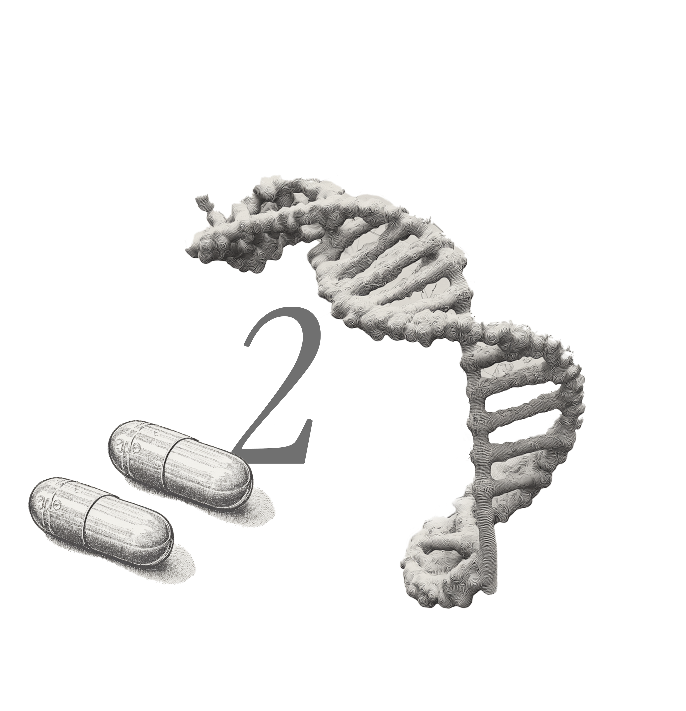
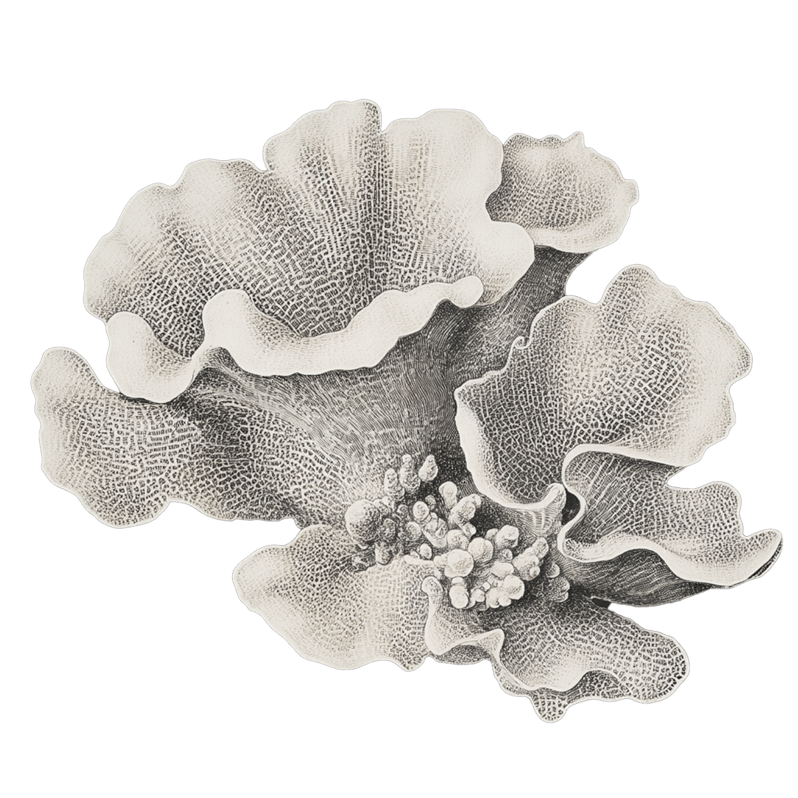
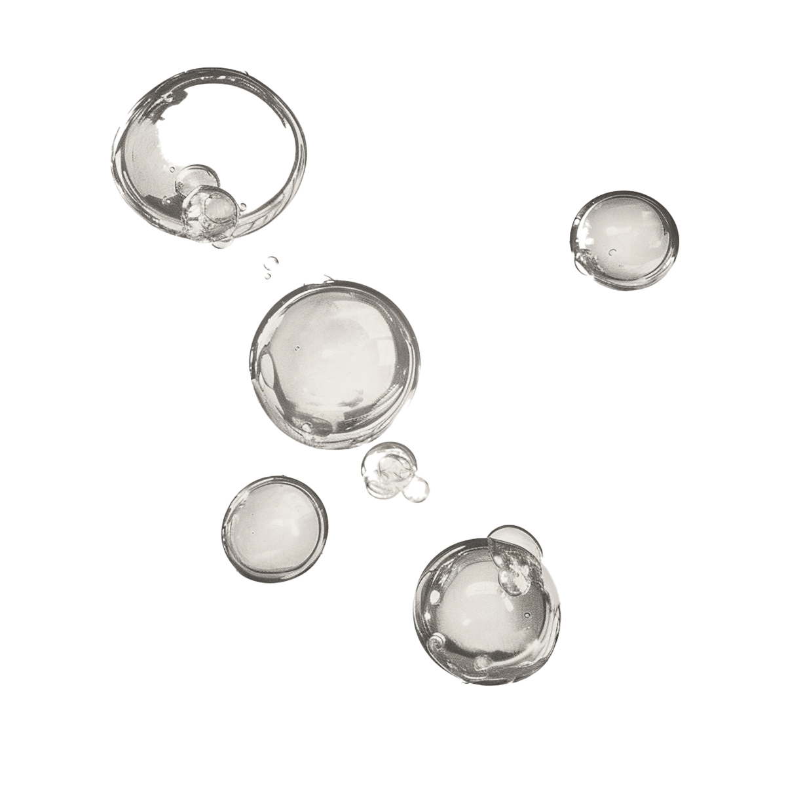
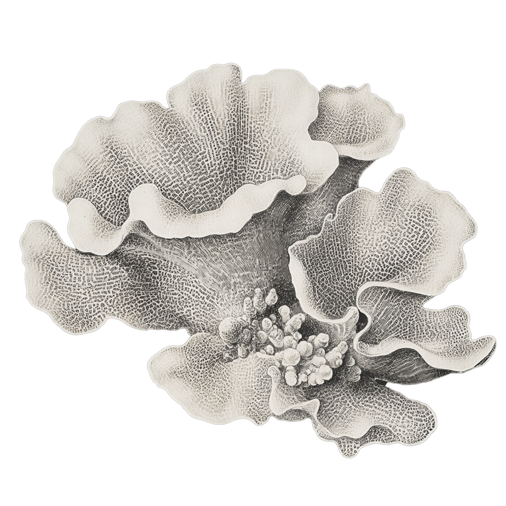
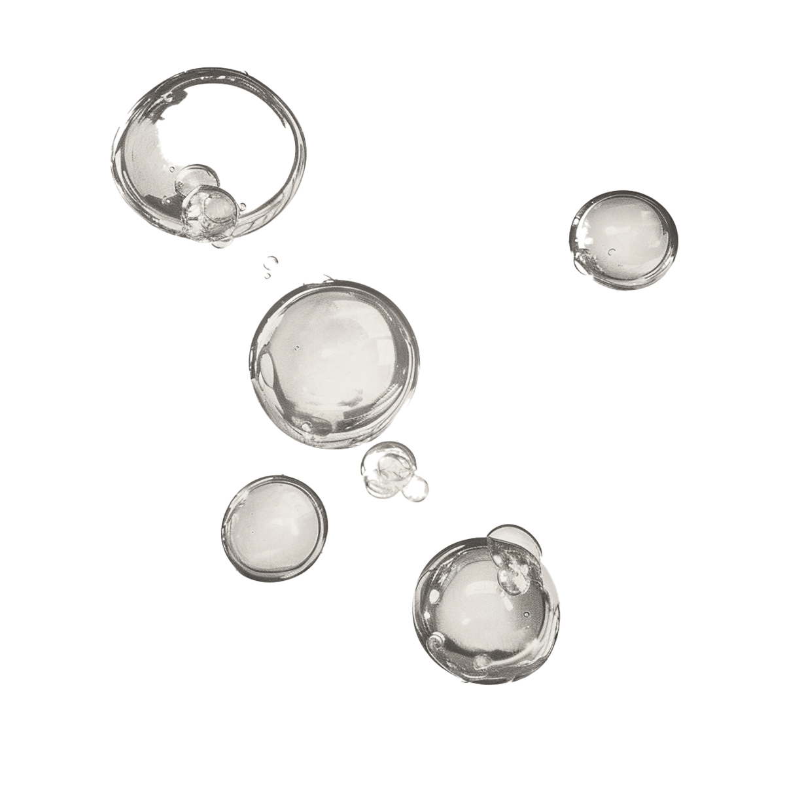

By Steph W & Ian Y
Data from Smithsonian Invertebrate Zoology Dept.
Published on Oct 12 2024
CORAL CHRONICLES
A visual journey through the vertical habitats of earth's ocean architects
 

What do we know about Corals?
Coral reefs play an essential role in maintaining the health of our oceans and supporting human life. Coral reefs also protect coastlines from erosion and storm surges, acting as natural barriers. Moreover, they contribute to tourism and offer potential medicinal compounds. Their preservation is critical, as they are both a source of life and a shield for coastal communities.


Corals in Different Ocean Depths
 




Thank You for Viewing
By
Steph Wu & Ian Yu
Sources
Smithsonian National Museum of Natural History, NOAA Fisheries, Frontiers Journal of Marine Molecular Biology and Ecology, Scientific Reports Journal
Photographic Images
Smithsonian National Museum of Natural History
Illustrations
Developed with the help of AI tools, with final stylistic touches & refinement completed in Photoshop and Illustrator